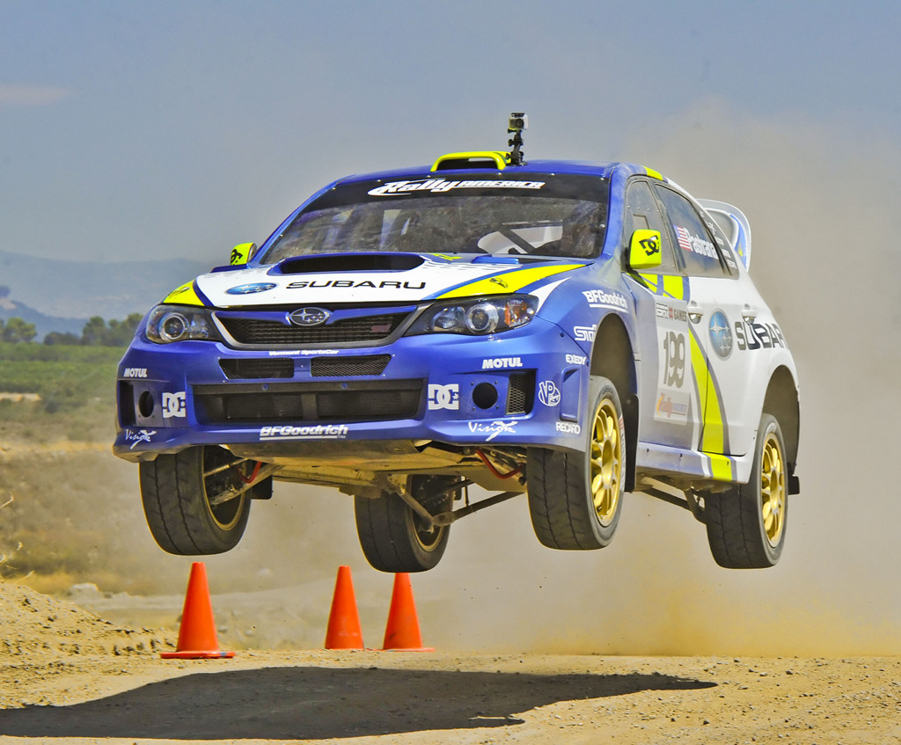
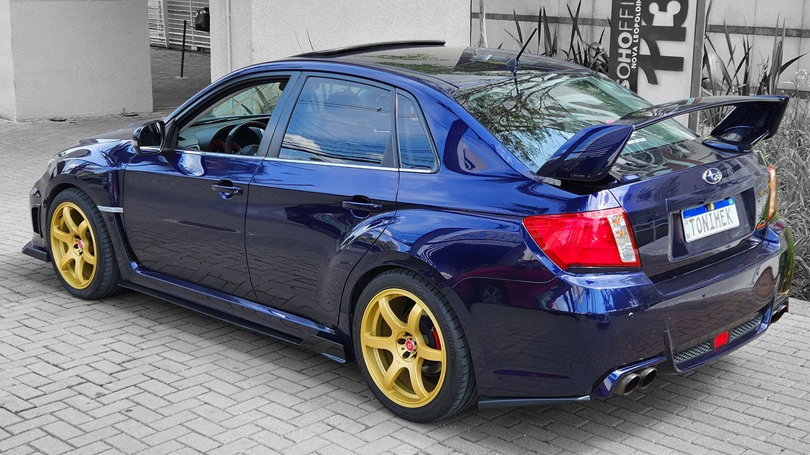
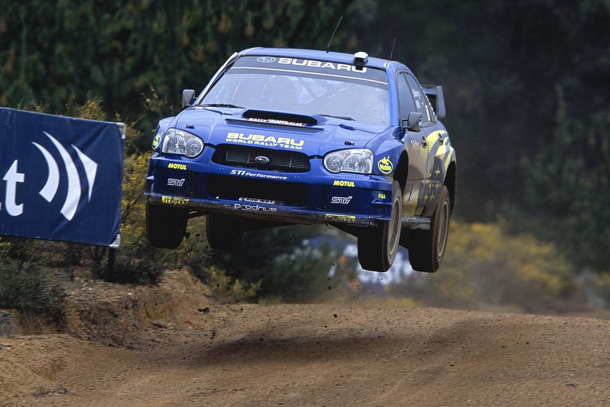
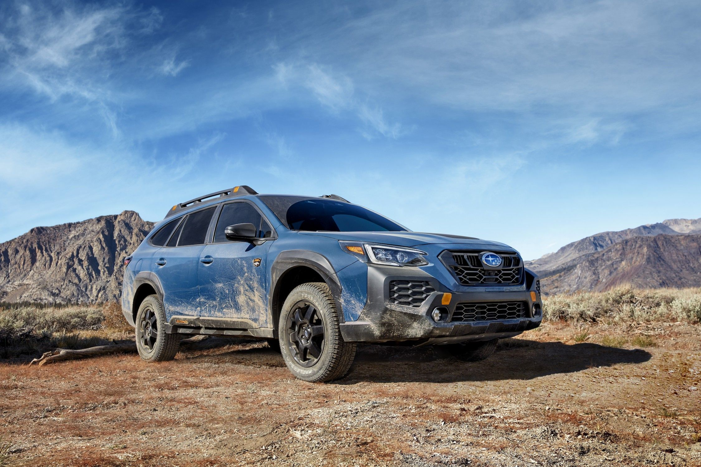

A Subaru é uma renomada fabricante de automóveis japonesa que tem conquistado uma sólida reputação ao longo das décadas. Fundada em 1953, a empresa é conhecida por sua abordagem única no mercado automobilístico, focando em tração integral (AWD) em praticamente todos os seus modelos. Essa característica singular tornou a Subaru uma escolha popular para motoristas que enfrentam condições de estrada desafiadoras, como neve, gelo ou terrenos acidentados.
Uma das características distintivas da marca é o motor boxer, que possui cilindros opostos horizontalmente. Esse design proporciona uma distribuição de peso equilibrada e contribui para a estabilidade dos veículos Subaru. Além disso, muitos modelos da marca são conhecidos por sua durabilidade e confiabilidade, o que os torna uma escolha popular para aqueles que desejam um carro que possa enfrentar os rigores do tempo e do uso diário.
Além disso, a Subaru tem uma forte presença no mundo do automobilismo, competindo em várias categorias, incluindo o Campeonato Mundial de Rally (WRC). Essas participações esportivas ajudaram a fortalecer a imagem da marca como fabricante de carros de alto desempenho.
No que diz respeito à variedade de modelos, a Subaru oferece uma linha diversificada que atende a uma ampla gama de necessidades, desde SUVs como o Subaru Outback e o Subaru Forester até carros esportivos como o Subaru WRX. A marca também se destaca por sua preocupação com o meio ambiente, com o lançamento de modelos híbridos e elétricos, demonstrando seu compromisso com a sustentabilidade.
Em resumo, a Subaru é uma marca de carro que se destaca por sua tração integral, confiabilidade, segurança e compromisso com a inovação. Com uma história rica e uma base de fãs dedicada, a Subaru continua a ser uma escolha popular entre os motoristas que valorizam o desempenho em condições desafiadoras e a durabilidade a longo prazo.